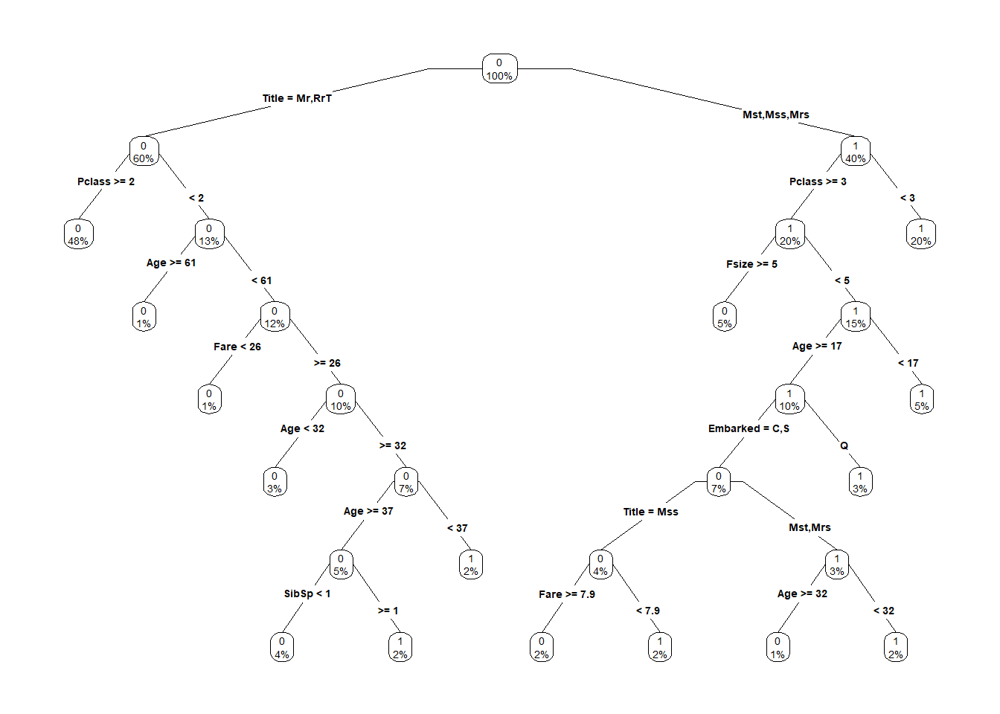

Predicting Survival on the Titanic
Introduction
Kaggle hosts a long-running, beginner-focused competition for a dataset of the passengers on the Titanic. From the description:
The sinking of the RMS Titanic is one of the most infamous shipwrecks in history. On April 15, 1912, during her maiden voyage, the Titanic sank after colliding with an iceberg, killing 1502 out of 2224 passengers and crew. This sensational tragedy shocked the international community and led to better safety regulations for ships. One of the reasons that the shipwreck led to such loss of life was that there were not enough lifeboats for the passengers and crew. Although there was some element of luck involved in surviving the sinking, some groups of people were more likely to survive than others, such as women, children, and the upper-class. In this challenge, we ask you to complete the analysis of what sorts of people were likely to survive. In particular, we ask you to apply the tools of machine learning to predict which passengers survived the tragedy.
Among the many excellent kernels that have been written for this competition, this Kernel was heavily informed by Megan Risdal’s excellent introductory Kernel. That said, any errors are my own.
set.seed(42)
library('knitr')
opts_chunk$set(message = FALSE, warning=FALSE)
library('readr')
train <- read_csv('../data-cache/Titanic/train.csv')
test <- read_csv('../data-cache/Titanic/test.csv')
library('dplyr')
full <- bind_rows(train, test)Exploratory Data Analysis
To begin, the titanic training dataset contains 891 observations of 12 variables. The test dataset contains 418 additional observations of the same vairables, save of course for the outcome variable, “Survived”.
We don’t know the sampling method by which Kaggle split the training and test sets (i.e. they didn’t tell us). There are basically two approaches that make sense: random selection and stratified sampling. Stratified sampling is where you identify some set of variables as important, and then make sure your training and test datasets have balanced numbers across the variables. By ‘balanced’, I mean that the distributions match. Let’s consider, for example, the distribution of ages between train and test:
library('plotly')
plot_ly(alpha = 0.6, showlegend = FALSE) %>%
add_histogram(x = train$Age) %>%
add_histogram(x = test$Age) %>%
layout(barmode = "overlay")If we thought Kaggle only stratified the data on the age variable, we should be very suspicious about that 60-65 bar where the test data has more observations than the training data. However, if they did, it’s likely that Kaggle stratified on a number of variables, including Age, Sex, Parch, Pclass, SibSp, Fare, and Embarked. Oh, and Survived. It’s kind of important to have some balance in your outcome. Unfortunately, I don’t know of a good way to throw 8 variables into a single (useful) graph, so let’s just leave it at that. (We’ll use random selection to Cross-validate our models later on, so I won’t talk about it how to do it here.)
From the above Histogram, we can see that the largest demographic was young adults, with fewer children and older passengers.
Now, there are other interesting variables (Sex, Pclass, etc.), but I’m going to jump to the outcome now. How was survival distributed?
train %>%
group_by(Survived) %>%
summarise(Number = n()) %>%
plot_ly(x = ~Survived, y= ~Number, type="bar")So approximately twice as many died as survived. Now, we can cheat a little bit! From the description, we know that 1502 out of 2224 passengers and crew died. The full dataset (train and test) contains 1309 passengers. However, Wikipedia gives us this nifty table:
|
Age/ |
Class/ |
Number aboard | Number saved | Number lost | Percentage saved | Percentage lost |
|---|---|---|---|---|---|---|
| Children | First Class | 6 | 5 | 1 | 83% | 17% |
| Second Class | 24 | 24 | 0 | 100% | 0% | |
| Third Class | 79 | 27 | 52 | 34% | 66% | |
| Women | First Class | 144 | 140 | 4 | 97% | 3% |
| Second Class | 93 | 80 | 13 | 86% | 14% | |
| Third Class | 165 | 76 | 89 | 46% | 54% | |
| Crew | 23 | 20 | 3 | 87% | 13% | |
| Men | First Class | 175 | 57 | 118 | 33% | 67% |
| Second Class | 168 | 14 | 154 | 8% | 92% | |
| Third Class | 462 | 75 | 387 | 16% | 84% | |
| Crew | 885 | 192 | 693 | 22% | 78% | |
| Total | 2224 | 710 | 1514 | 32% | 68% | |
From this, we can infer that there were 908 crew aboard. 2224 - 908 = 1316, so Kaggle has given us effectively every passenger. We know that 342 from the training dataset survived, so we should predict approximately 967 from the test set survived. This may be a useful sanity check.
A funny thing about EDA is that you can do it forever. However, EDA forever never leads to a useful model, so let’s plunge into modeling.
First Pass Modeling
I personally like to model in several stages: first, model with exactly the data you’re given. Next, model with the data you can infer (i.e. Feature Engineering). Then, model with better models. That way you can tell at each step if your labor is adding value to your effort.
Scoring
Kaggle scores us on the train and test set they provide, but we want to get a good guess about how well a model is performing before we submit it to Kaggle. So, to do that, I’m going to split the training data again, and then use the training holdover to score each model’s performance.
subtraining <- train %>%
sample_frac(0.7)
subtest <- train %>%
setdiff(subtraining)Since we’ll be looking at several different modeling approaches, we’ll need an objective scoring metric. The Kaggle metric is the percentage of passengers we predict correctly, a value which we wish to maximise. For simplicity’s sake, I’m going to use a slightly different formulation of the same metric, called the Mean Absolute Error. It’s basically what it sounds like: for every value we predict, subtract it from the truth (the difference of which is called the “error”), take the absolute value of the error, and then take the mean of all the absolute values. This gives us a number we want to minimize.
MAE <- function(a,b=subtest$Survived,na.rm=TRUE){mean(abs(a-b), na.rm = na.rm)}So, for example, if we pick 1000 random values between 0 and 1, round them, and then do it again and check the Mean Absolute Error, it should be pretty close to .5.
demo <- MAE(round(runif(1000)), round(runif(1000)))
demo## [1] 0.514To get from this to the proportion we predicted successfully, we need only subtract from 1.
1-demo## [1] 0.486Logistic Regression
library(intubate)
formula <- Survived ~ Pclass + Sex + Age + SibSp + Parch + Fare + Embarked
predictions <- data.frame(row.names = row.names(subtest))
subtraining %>%
ntbt_glm(formula, family = "binomial") %>%
predict(subtest[!names(subtest) %in% "Survived"], type = "response") %>%
round() ->
predictions$logitNow, before we score this, I should note that any row which contained an NA will have produced NA as a prediction. There are many ways to handle this problem. We could ignore them in our scoring:
MAE(predictions$logit, na.rm=TRUE)## [1] 0.1994382Alternately, we could fill them in with a prior survival estimate. The baseline survival rate was close to a third, meaning that we’re better off guessing a random person died than that they survived:
predictions$logit2 <- predictions$logit
predictions$logit2[is.na(predictions$logit2)] <- 0
MAE(predictions$logit2)## [1] 0.2199776The better approach, however, is to try to fill in the blanks.
Imputation
Some models don’t handle missing values very well. The Titanic dataset has some missing values. So, let’s try to take care of them. The values in this dataset aren’t missing entries uniformly:
full %>% is.na() %>% colSums() %>% tbl_df %>% rename(Missing = value) %>% kable| Missing | |
|---|---|
| PassengerId | 0 |
| Survived | 418 |
| Pclass | 0 |
| Name | 0 |
| Sex | 0 |
| Age | 263 |
| SibSp | 0 |
| Parch | 0 |
| Ticket | 0 |
| Fare | 1 |
| Cabin | 1014 |
| Embarked | 2 |
The 418 missing the Survived variable are the 418 members of the test set. The 263 missing Age are important and interesting, so let’s be sure to address them. I doubt Cabin will be all that interesting, mostly because it seems to lack enough data for us to extract any credible signal from it. To start, let’s focus on Embarked and Fare.
Embarkment
When you’re only missing a couple, it’s usually enough to make a good, informed estimate about what those values should have been. It’s unlikely to matter for the results of a model (since its a small number and you should basically always guess something close to the mean or trend, rather than an outlier). Embarked is such a variable. Of all the passengers, we don’t know the embarkment location for these two:
full %>%
filter(is.na(Embarked)) %>%
kable()| PassengerId | Survived | Pclass | Name | Sex | Age | SibSp | Parch | Ticket | Fare | Cabin | Embarked |
|---|---|---|---|---|---|---|---|---|---|---|---|
| 62 | 1 | 1 | Icard, Miss. Amelie | female | 38 | 0 | 0 | 113572 | 80 | B28 | NA |
| 830 | 1 | 1 | Stone, Mrs. George Nelson (Martha Evelyn) | female | 62 | 0 | 0 | 113572 | 80 | B28 | NA |
Titanic collected passengers from three different ports: Southampton, Cherbourg, and Queenstown (imaginatively coded “S”, “C”, and “Q”, respectively).

“Titanic’s Route”
Of particular note, we can see that both our passengers of mysterious origin were First Class passengers who paid $80 for their tickets. So from where did First class passengers embark?
table(full$Pclass, full$Embarked)##
## C Q S
## 1 141 3 177
## 2 28 7 242
## 3 101 113 495So there were very few embarkments by first and second class passengers in Queenstown, meaning it’s highly unlikely the missing two were from there. Now, from where did First class passengers paying $80 per ticket embark?
full %>%
filter(!is.na(Embarked), Pclass == 1) %>%
plot_ly(x=~Embarked, y=~Fare) %>%
add_boxplot() %>%
layout(boxmode = "group")See where $80 falls on the boxplots above? It could be any of them. However, the median fare for a first-class passenger departing from Charbourg is quite close to the $80 paid by our embarkment-deficient passengers. Either way, this is unlikely to make a huge difference to any of the models, so let’s take a leap and replace the NA values with ‘C’.
full$Embarked[is.na(full$Embarked)] <- 'C'Fare Price
full %>%
filter(is.na(Fare)) %>%
kable()| PassengerId | Survived | Pclass | Name | Sex | Age | SibSp | Parch | Ticket | Fare | Cabin | Embarked |
|---|---|---|---|---|---|---|---|---|---|---|---|
| 1044 | NA | 3 | Storey, Mr. Thomas | male | 60.5 | 0 | 0 | 3701 | NA | NA | S |
This is a third class passenger who departed from Southampton (‘S’). Let’s visualize Fares among all others sharing their class and embarkment (n = 494).
full %>%
filter(Pclass == 3, Embarked == 'S', !is.na(Fare)) %>%
plot_ly(x = ~Fare, type="histogram")From this visualization, we can see that a preponderance of fares (third-class passengers from Southampton) paid around $10. (The median is actually $8.05) so it seems a reasonable to simply replace the NA Fare value with that median.
full$Fare[is.na(full$Fare)] <- median(full[full$Pclass == '3' & full$Embarked == 'S', ]$Fare, na.rm = TRUE)Age
Finally, as we noted earlier, there are many missing Age values in our data. In order to solve this problem we could provide a treatment similar to the one above, though it would take a long time and produce unreliable data. Instead, we can outsource the hard legwork to a machine learning algorithm. Why? Because we must. When a variable is missing its values in only one or two rows, making intelligent guesses about those values is reasonable. However, when many are missing (and missing in a way that isn’t rigidly consistent with some other variables in the dataset), then statistical imputation is the better choice. Remember, we’re missing 263 ages.
library('mice')
factor_vars <- c('PassengerId', 'Sex', 'Embarked')
full[factor_vars] <- lapply(full[factor_vars], as.factor)
useless <- c('PassengerId', 'Name', 'Ticket', 'Cabin', 'Family', 'Surname', 'Survived')
useful <- names(full)[!names(full) %in% useless]
full %>%
select_(.dots=useful) %>%
mice(method='rf') ->
mice_mod
mice_output <- mice::complete(mice_mod)If this were a serious effort, I’d cross-validate MICE to make sure it’s doing a good job, but I’m more than willing to settle for a ‘good-enough’ approach here. The good-enough approach is to check to make sure that MICE didn’t do anything stupid like stick all missing ages with the mean age, which we’d be able to see in a histogram.
plot_ly(alpha = 0.6, showlegend = FALSE) %>%
add_histogram(x = ~mice_output$Age) %>%
add_histogram(x = ~full$Age) %>%
layout(barmode = "overlay")Not bad! Looks like MICE didn’t change the distribution too radically, so that’s probably good. Again, I’d need to cross-validate to check. However, since this is probably good, I’m going to run with it.
# Replace Age variable from the mice model.
full$Age <- mice_output$AgeTODO: Stop feeling bad about it and actually cross-validate MICE.
Before we move on again, let’s do a quick sanity check that there’s no missing data:
full %>% is.na() %>% colSums() %>% tbl_df %>% rename(Missing = value) %>% kable| Missing | |
|---|---|
| PassengerId | 0 |
| Survived | 418 |
| Pclass | 0 |
| Name | 0 |
| Sex | 0 |
| Age | 0 |
| SibSp | 0 |
| Parch | 0 |
| Ticket | 0 |
| Fare | 0 |
| Cabin | 1014 |
| Embarked | 0 |
Second Pass Modeling
Now that we’ve finished imputing values for all variables that we care about, let’s check to see if we’ve improved at all:
#We've got to refresh subtraining and subtest to contain the values we've filled in.
subtraining <- full[full$PassengerId %in% subtraining$PassengerId,]
subtest <- full[full$PassengerId %in% subtest$PassengerId,]
subtraining %>%
ntbt_glm(formula, family = "binomial") %>%
predict(subtest[!names(subtest) %in% "Survived"], type = "response") %>%
round() ->
predictions$logit3
MAE(predictions$logit3)## [1] 0.2008979We’re doing a tiny bit worse, but that’s OK! Improving the model was an indirect goal. What we accomplished was improving our data quality, which makes more models available to us. Now, let’s go for something that should make a difference in model quality: feature engineering.
Feature Engineering
Names
The names in this dataset are an interesting beast. They contain formal titles, as well as firstnames and surnames. Because it’s a clean dataset, getting the titles is easy: just parse the first word after a comma in the Name field:
full$Title <- gsub('(.*, )|(\\..*)', '', full$Name)So, what kinds of titles do we have?
# Show title counts by sex
table(full$Sex, full$Title)##
## Capt Col Don Dona Dr Jonkheer Lady Major Master Miss Mlle Mme
## female 0 0 0 1 1 0 1 0 0 260 2 1
## male 1 4 1 0 7 1 0 2 61 0 0 0
##
## Mr Mrs Ms Rev Sir the Countess
## female 0 197 2 0 0 1
## male 757 0 0 8 1 0Interesting. Lots of Mr, Mrs, Miss, and Master, plus a bunch unusual titles (mostly nobility and military officers).
# Titles with very low cell counts to be combined to "rare" level
rare_title <- c('Dona', 'Lady', 'the Countess','Capt', 'Col', 'Don', 'Dr', 'Major', 'Rev', 'Sir', 'Jonkheer')
# Also reassign mlle, ms, and mme accordingly
full$Title[full$Title == 'Mlle'] <- 'Miss'
full$Title[full$Title == 'Ms'] <- 'Miss'
full$Title[full$Title == 'Mme'] <- 'Mrs'
full$Title[full$Title %in% rare_title] <- 'Rare Title'
# Show title counts by sex again
table(full$Sex, full$Title)##
## Master Miss Mr Mrs Rare Title
## female 0 264 0 198 4
## male 61 0 757 0 25# Finally, grab surname from passenger name
full$Surname <- sapply(full$Name, function(x) strsplit(x, split = '[,.]')[[1]][1])Families
# Create a family size variable including the passenger themselves
full$Fsize <- full$SibSp + full$Parch + 1
# Create a family variable
full$Family <- paste(full$Surname, full$Fsize, sep='_')What does our family size variable look like? To help us understand how it may relate to survival, let’s plot it among the training data.
# I can't figure out how to do this one in bare-metal plotly, so I'll just use ggplot2 and wrap it.
library('ggplot2')
ggplotly(
ggplot(full[1:891,], aes(x = Fsize, fill = factor(Survived))) +
geom_bar(position = "fill", aes(alpha = .1)) +
scale_x_continuous(breaks=c(1:11)) +
labs(x = 'Family Size', y = 'Proportion Surviving')
)From this we can see that married couples and small families had higher survival rates than individuals and large families. This insight may or may not be useful, depending upon the modeling approach we use. This type of discretizing partitioning is useful for regression because it encodes more information than the regression can extract from the relationship. With the integer values, all a regression will determine is that as family size increases, survival probability decreases.
By contrast, Random Forests are good at detecting partitions of this sort in continuous data, provided that the forest is large enough. So a discretized version of this variable should provide less signal to a well-tuned random forest. Never-the-less, since I’m ultimately going to use both, I’ll discretize for the benefit of the regression.
# Discretize family size
full$FsizeD[full$Fsize == 1] <- 'singleton'
full$FsizeD[full$Fsize < 5 & full$Fsize > 1] <- 'small'
full$FsizeD[full$Fsize > 4] <- 'xlarge'
ggplotly(ggplot(full[1:891,], aes(FsizeD)) +
geom_bar(aes(fill = factor(Survived))) +
labs(x = 'Family Size', y = 'Number Surviving'))(Note that the Y axis indicates the number of individuals belonging to families of the type of family size, rather than the number of families.)
Since we know (or have a good guess about) everyone’s age, we can create a couple of new age-dependent variables: Child and Mother. A child will simply be someone under 18 years of age; a mother will be a passenger who is female, older than 18, with more than 0 children, and without the title ‘Miss’. We require the last constraint because the existing dataset gives you a wierd variable: whether or not you had a child or parent aboard. If you were over 18 with more than one child, that could have indicated that you were actually an adult traveling with a parent.
# Create the column child, and indicate whether child or adult
full$Child[full$Age < 18] <- 'Child'
full$Child[full$Age >= 18] <- 'Adult'
# Show counts
table(full$Child, full$Survived)##
## 0 1
## Adult 476 273
## Child 73 69Adults die in 480/756 cases, or with probability 0.6349206. Children fare a tiny bit better, dying with probability 0.5111111. We will finish off our feature engineering by creating the Mother variable. Maybe we can hope that mothers are more likely to have survived on the Titanic.
full$Mother <- 0
full$Mother[full$Sex == 'female' & full$Parch > 0 & full$Age > 18 & full$Title != 'Miss'] <- 1
table(full$Mother, full$Survived)##
## 0 1
## 0 533 303
## 1 16 39Now that we’re done with feature engineering, let’s do a quick sanity check that there’s no missing data:
full %>% is.na() %>% colSums() %>% tbl_df %>% rename(Missing = value) %>% kable| Missing | |
|---|---|
| PassengerId | 0 |
| Survived | 418 |
| Pclass | 0 |
| Name | 0 |
| Sex | 0 |
| Age | 0 |
| SibSp | 0 |
| Parch | 0 |
| Ticket | 0 |
| Fare | 0 |
| Cabin | 1014 |
| Embarked | 0 |
| Title | 0 |
| Surname | 0 |
| Fsize | 0 |
| Family | 0 |
| FsizeD | 0 |
| Child | 0 |
| Mother | 0 |
Perfect. Now to update the model!
Third Pass Modeling (For real, this time)
Remember how our first model was scoring 0.2008979? How about a Logistic model based on all of our shiny new variables?
subtraining <- full[full$PassengerId %in% subtraining$PassengerId,]
subtest <- full[full$PassengerId %in% subtest$PassengerId,]
formula <- Survived ~ Pclass + Sex + Age + SibSp + Parch + Fare + Embarked + Title + Fsize + FsizeD + Child + Mother
subtraining %>%
ntbt_glm(formula, family = "binomial") %>%
predict(subtest[!names(subtest) %in% "Survived"], type = "response") %>%
round() ->
predictions$logit4
MAE(predictions$logit4)## [1] 0.1739618Our score improves a bit! Now, maybe we can do even better with a stronger machine learning approach.
Decision Tree
[This section was informed by Arda Yildirim’s script to build and visualize a Decision Tree for the Titanic Challenge.]
A decision tree looks something like this:
library('rpart')
library('rpart.plot')
library('magrittr')
formula %>%
rpart(data = subtraining, method = "class", control = rpart.control(cp=0.0001)) %T>%
prp(type = 4, extra = 100) %>%
predict(subtest[!names(subtest) %in% "Survived"]) ->
decision_tree
If we actually use this decision tree to generate predictions, it scores…
decision_tree[,2] %>%
round() ->
predictions$dt
MAE(predictions$dt)## [1] 0.1593715…Slightly better than the logistic regression. What if we grow a lot of them?
Random Forest
We then build our model using ranger on the training set.
library('ranger')
subtraining %>%
select(-Cabin) %>%
ranger(formula, data = .) %>%
predict(subtest[!names(subtest) %in% "Survived"]) ->
temp
temp$predictions %>%
round() ->
predictions$rf
MAE(predictions$rf)## [1] 0.1223345Slightly better than the single decision tree. From here we could tune it until we find some optimal parameters, but I’ll take it as-is.
Ensemble
Since we’ve gathered predictions from a bunch of different models, what happens if we throw them all together?
predictions %<>%
mutate(ensemble = round((logit4 + dt + rf)/3))
MAE(predictions$ensemble)## [1] 0.1380471Our best yet! This is often the case–models have weaknesses that other models make up for. But those other models have weaknesses, too. By using even a simple combination scheme, we can get better predictions. Speaking of which…
Prediction
Let’s make one! To do so, we’ll need to refresh the training and test data, retrain models on the full datasets, and assemble them in the ensemble again.
train <- full[1:891,]
test <- full[892:1309,]
predictions <- data.frame(row.names = row.names(test))
train %>%
ntbt_glm(formula, family = "binomial") %>%
predict(test, type = "response") %>%
round() %>%
as.integer() ->
predictions$logit
formula %>%
rpart(data = train, method = "class", control = rpart.control(cp=0.0001)) %>%
predict(test[!names(test) %in% "Survived"]) ->
decision_tree
decision_tree[,2] %>%
round() ->
predictions$dt
train %>%
select(-Cabin) %>%
ranger(formula, data = .) %>%
predict(test[!names(test) %in% "Survived"]) ->
temp
temp$predictions %>%
round() ->
predictions$rf
predictions %<>%
mutate(ensemble = as.integer(round((logit + dt + rf)/3)))
solution <- data.frame(
PassengerID = test$PassengerId,
Survived = predictions$ensemble
)
write_csv(solution, 'titanic_ensemble.csv')At present, there are nearly 6000 entries. This puts us in the top half, with an accuracy of 0.77990.